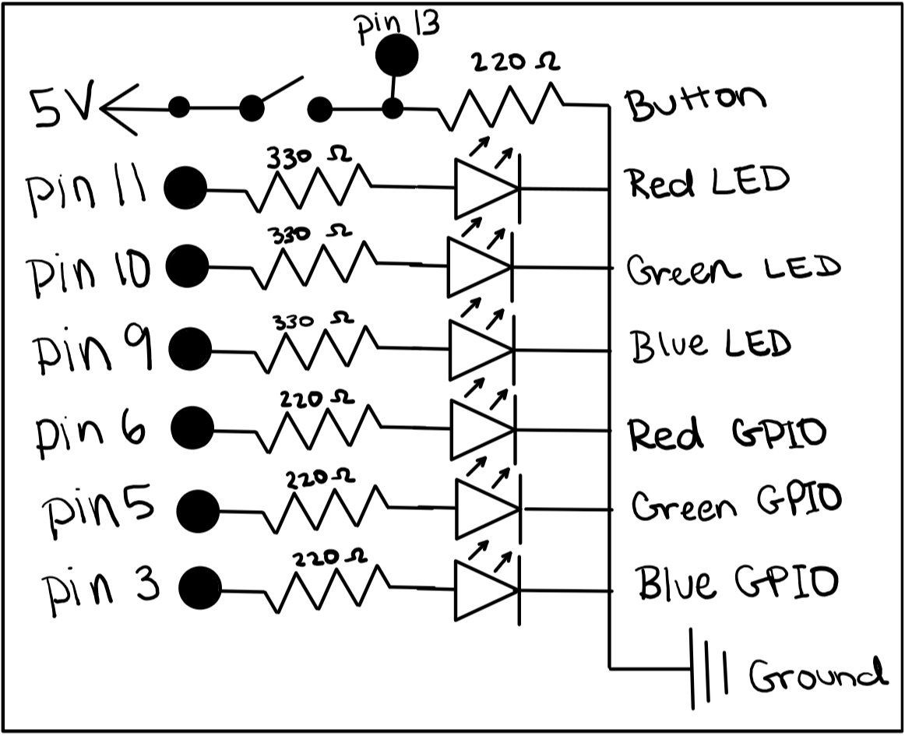
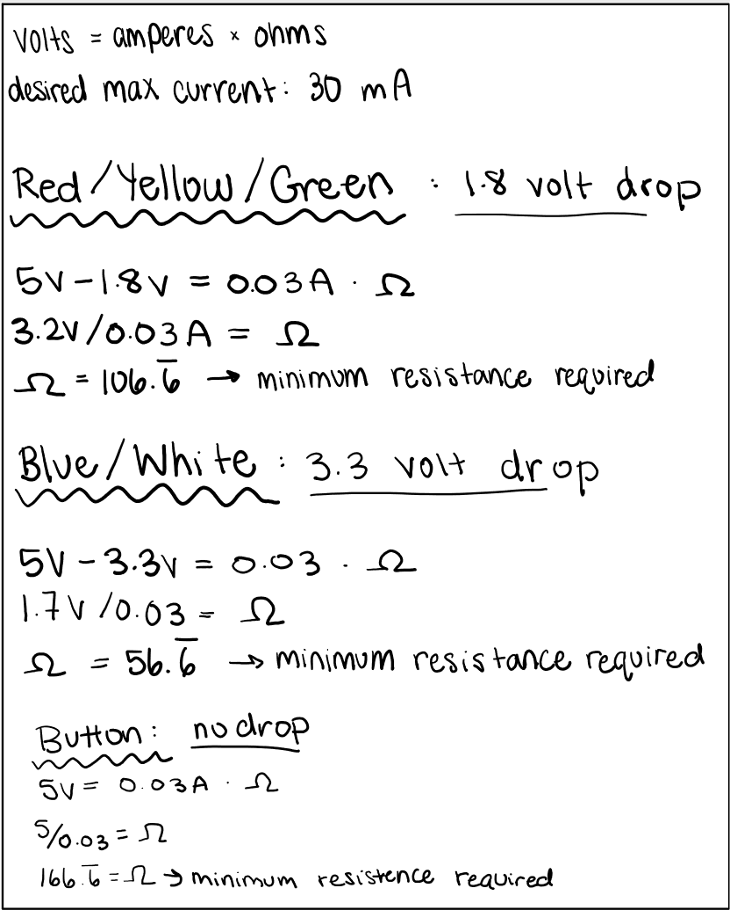

Paisley's Assignment 2!
Here is my gif for assignment 1! It shows the GIOP diode fading in red, blue, and green, and the red, blue, and green LEDs turning on.

Here is my schematic for assignment 2! The schematic shows how my circuit board should be connected.

Here is my math for how I chose the proper resistance to use. I chose to use 330 ohms of resistance for all the LED lights, 220 ohms of resistence for the GIOP light, and 220 ohms of resistence for the button. These are all higher than the minimum resistance required found in my calculations.

This is the code I used to make my the LEDs and GIOP on my arduino blink and fade!
// constants won't change const int buttonPin = 13; // number of the button pin const int redPin = 3; // number of the red GPIO pin const int bluePin = 6; // number of the blue GPIO pin const int greenPin = 5; // number of the green GPI pin const int rPin = 11; // number of the red LED pin const int gPin = 10; // number of the green LED pin const int bPin = 9; // number of the blue LED pin // variables will change int buttonState = 0; // reading button status // setup runs once void setup() { pinMode(redPin, OUTPUT); // initialize red GPIO pin as output pinMode(bluePin, OUTPUT); // initialize blue GPIO pin as output pinMode(greenPin, OUTPUT); // initialize green GPIO pin as output pinMode(rPin, OUTPUT); // initialize red LED pin as output pinMode(bPin, OUTPUT); // initialize blue LED pin as output pinMode(gPin, OUTPUT); // initialize green LED pin as output pinMode(buttonPin, INPUT); // initialize button pin as output } // loop function repeats forever void loop() { buttonState = digitalRead(buttonPin); // read button status value if (buttonState == HIGH) { // check if button is pressed (buttonState HIGH) for (int i = 0 ; i < 200; i = i + 8) { // fade from 0 to 200 by increments of 8 analogWrite(redPin, i); // fade using red GPIO pin delay(20); // between each increment wait 20 milliseconds } digitalWrite(rPin, HIGH); // turn on red LED for (int i = 200 ; i >= 0; i = i - 8) { // fade from 200 to 0 by increments of 8 analogWrite(redPin, i); // fade using red GPIO pin delay(20); // between each increment wait 20 milliseconds } delay(300); // wait 300 milliseconds for (int i = 0 ; i < 25; i ++) { // fade from 0 to 25 by increments of 1 analogWrite(greenPin, i); // fade using green GPIO pin delay(20); // between each increment wait 20 milliseconds } digitalWrite(gPin, HIGH); // turn on green LED for (int i = 25 ; i >= 0; i --) { // fade from 25 to 0 by increments of 1 analogWrite(greenPin, i); // fade using green GPIO pin delay(20); // between each increment wait 20 milliseconds } delay(300); // wait 300 milliseconds for (int i = 0 ; i < 25; i ++) { // fade from 0 to 25 by increments of 1 analogWrite(bluePin, i); // fade using blue GPIO pin delay(20); // between each increment wait 20 milliseconds } digitalWrite(bPin, HIGH); // turn on blue LED for (int i = 25 ; i >= 0; i --) { // fade from 25 to 0 by increments of 1 analogWrite(bluePin, i); // fade using blue GPIO pin delay(20); // between each increment wait 20 milliseconds } delay(300); // wait 300 milliseconds digitalWrite(rPin, LOW); // turn off red LED digitalWrite(gPin, LOW); // turn off green LED digitalWrite(bPin, LOW); // turn off blue LED } else { // nothing happens } }